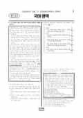

문제지

전국연합학력평가 · 시·도교육청 주관
2026년 6월 고1 학력평가 국어 1등급컷은 원점수 91점(추정), 표준점수 최고점은 142점입니다.
원점수 1등급컷은 공식 발표값이 아니라 EBSi·입시기관 값입니다. 등급별 값은 등급컷 표, 출처 구분은 데이터 원칙에 있습니다.

시험지를 먼저 풀어 보세요. 등급컷·표준점수·난이도는 흐리게 가려 뒀어요.
| 등급 | 원점수 | 표준점수 | 백분위 |
|---|---|---|---|
| 1 | 91 | 134 | 96 |
| 2 | 83 | 127 | 89 |
| 3 | 73 | 118 | 77 |
| 4 | 60 | 106 | 59 |
| 5 | 46 | 94 | 39 |
| 6 | 31 | 81 | 22 |
| 7 | 22 | 73 | 11 |
| 8 | 18 | 69 | 4 |
등급별 컷 · 입시기관 2곳 원점수 추정 종합(EBSi·대성마이맥) · 만점 100점
| 등급 | 표준점수 이상 | 인원(명) | 비율 |
|---|---|---|---|
| 1 | 134 | 15,521 | 4.2% |
| 2 | 127 | 26,192 | 7.09% |
| 3 | 118 | 43,497 | 11.78% |
| 4 | 106 | 66,776 | 18.09% |
| 5 | 94 | 72,586 | 19.66% |
| 6 | 81 | 67,179 | 18.2% |
| 7 | 73 | 41,989 | 11.37% |
| 8 | 69 | 21,306 | 5.77% |
| 9 | 53 | 14,163 | 3.84% |
시·도교육청 공개 자료
출처: 시·도교육청이 공개한 전국연합학력평가 성적 분석·통계자료(공개 자료 보기).
EBSi 응답자 기준으로 가장 많이 틀린 문항은 8번(2점)이고, 오답률은 75.6%입니다. 상위 15문항 중 1문항은 정답보다 한 오답을 고른 사람이 더 많았습니다(8번: 정답 ① 24.4%, ④ 29.3%). 오답률 50%를 넘은 문항은 4개입니다.
| 순위 | 문항 | 배점 | 오답률 | 정답 | 많이 고른 오답 |
|---|---|---|---|---|---|
| 1 | 8번 | 2점 | 75.6% | ① | ④ 29.3% |
| 2 | 3번 | 2점 | 57.4% | ① | ⑤ 35.8% |
| 3 | 39번 | 2점 | 57.1% | ② | ③ 30.2% |
| 4 | 26번 | 2점 | 54.2% | ⑤ | ② 27.5% |
| 5 | 45번 | 3점 | 49.1% | ① | ⑤ 27.4% |
| 6 | 27번 | 3점 | 46.8% | ⑤ | ③ 15.6% |
| 7 | 4번 | 2점 | 45.3% | ② | ④ 23.5% |
| 8 | 42번 | 3점 | 40.2% | ⑤ | ② 18.1% |
| 9 | 1번 | 2점 | 39.3% | ① | ③ 35.5% |
| 10 | 14번 | 3점 | 36.5% | ⑤ | ③ 13.3% |
| 11 | 23번 | 3점 | 35.6% | ⑤ | ② 23.4% |
| 12 | 10번 | 2점 | 35.5% | ⑤ | ④ 15.6% |
| 13 | 44번 | 2점 | 34.9% | ① | ④ 10.7% |
| 14 | 25번 | 2점 | 34.7% | ① | ⑤ 9.8% |
| 15 | 15번 | 2점 | 34.7% | ① | ④ 18.2% |
EBSi 가채점 응답자 기준 · 전 문항 중 오답률 상위 15문항
출처: EBSi 역대 등급컷·오답률 공개 화면. 가채점에 참여한 EBSi 이용자 응답이라 전체 응시자 정답률과는 다를 수 있습니다.
발행 기관: 시·도교육청(전국연합학력평가). 파일 위치: 이 사이트가 보관한 사본. 저작권은 발행 기관에 있습니다. 원본과 다르거나 게시 중단이 필요하면 연락처로 알려 주세요. 등급컷 출처 구분은 데이터 원칙에서 설명합니다.
막대 색은 역대 대비 난이도 · 진한 막대가 이 시험 · 막대를 누르면 그 회차로 이동
| 회차 | 1등급컷 | 표점 최고 | 1등급 표점 | 난이도 |
|---|---|---|---|---|
| 6월 학평2026년 고1이 시험 | 91 | 142 | 134 | 쉬움 |
| 3월 학평2026년 고1 | 89 | 146 | 134 | 매우 쉬움 |
| 10월 학평2025년 고1 | 91 | 142 | 134 | 보통 |
| 9월 학평2025년 고1 | 81 | 156 | 136 | 매우 어려움 |
| 6월 학평2025년 고1 | 86 | 150 | 136 | 어려움 |
| 3월 학평2025년 고1 | 84 | 153 | 135 | 쉬움 |
| 10월 학평2024년 고1 | 89 | 145 | 136 | 어려움 |
| 9월 학평2024년 고1 | 87 | 148 | 136 | 어려움 |
| 6월 학평2024년 고1 | 87 | 146 | 134 | 보통 |
| 3월 학평2024년 고1 | 91 | 141 | 131 | 매우 쉬움 |
국어는 교육청 채점 결과 1등급 구분 표준점수가 134점, 최고점이 142점(826명)으로 3월(1등급 134점, 최고점 146점)과 1등급 컷이 같았습니다. EBSi 가채점 응답자 기준 오답률 50%를 넘은 문항은 4개였습니다.
가장 많이 틀린 8번(2점, 75.6%)은 '배려심이 깊은 철수는 키가 크다' 같은 문장에서 명사절·서술절·관형절로 안긴문장을 분석하는 학습 활동 문항이었습니다. 3번(57.4%)은 공손성의 원리와 소극적 체면을 지키는 표현을 다룬 발표 후속 수업 문항으로 응답의 35.8%가 한 오답에 몰렸습니다.
독서는 선거관리기관을 행정부 소속 여부에 따라 정부형과 독립형으로 분류한 사회 지문(11~15번), 벵겔라 해류가 만드는 안개에서 등판의 돌기 구조로 물을 모으는 나미브 사막 딱정벌레(16~19번), 철학자들이 말한 '생각이 일어나는 상황'(20~23번)이었습니다.
작문의 26번(54.2%)은 모든 청년 1인 월세 가구에 균등한 월세 지원금을 주자는 논증문의 글쓰기 계획을 <보기>의 논증 요소로 따지는 문항이었습니다.
문학은 황제의 명과 유 승상과의 약속 사이에서 갈등하는 「유생전」(31~34번), 등록금과 남루를 떠올리는 딸의 이야기인 박완서 「후남아, 밥 먹어라」(35~38번), 가는 봄을 아쉬워하는 「석춘사」와 심노숭의 「눈물의 근원」(39~42번), 윤동주 「사랑의 전당」과 박성우 「보라, 감자꽃」(43~45번)이었습니다. 「석춘사」와 「눈물의 근원」의 공통점을 고르는 39번(57.1%)이 문학에서 가장 많이 틀린 문항이었습니다.
화법·작문은 대화의 협력의 원리를 다룬 발표(1~3번), 학교 홍보 영상 구성을 논의한 방송부 회의(4~6번), 보편주의와 선별주의를 다룬 논증문(24~27번), 도자기 공예 체험 소감문(28~30번)이었습니다.